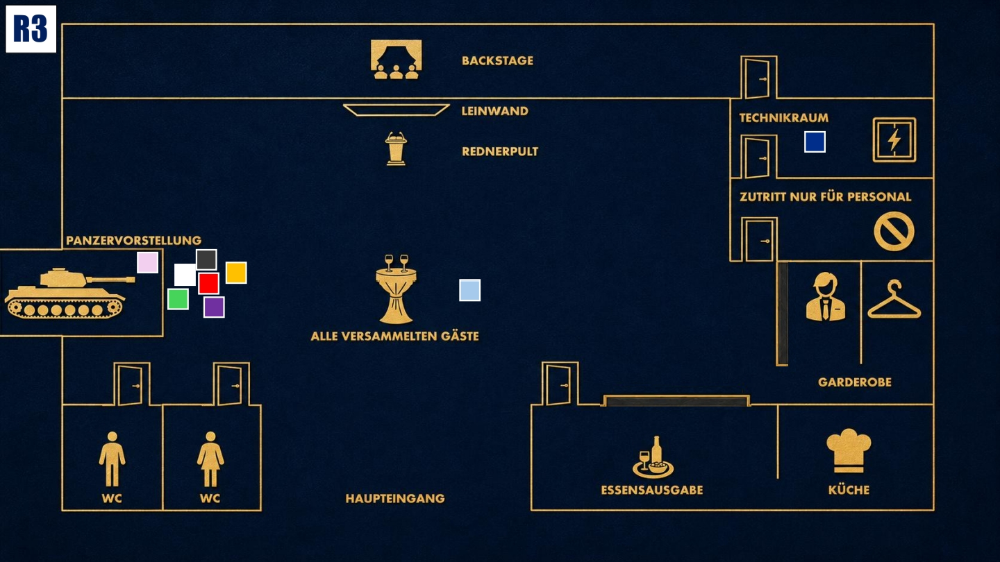

Konfrontation
Der Moment der Wahrheit. Geheimnisse kommen ans Licht. Nutze alles, was du weißt.

Das Ziel der dritten Runde
Die ganze Zeit über wurdest du als Verursacher des Blackouts dargestellt. Doch du hast dem Drahtzieher eine Falle gestellt. Decke die Wahrheit auf und lenke die Schuld von dir weg.
Deine Ausgangslage
Nach außen wirkst du weiterhin wie der technische Verantwortliche, auf den alle zeigen. Doch dir wird klar: Der Plan sah von Anfang an vor, dass du die Schuld bekommst. Du hast dich auf die sechzig Sekunden Dunkelheit eingelassen und für den Notfall vorgesorgt. Jetzt musst du den Drahtzieher im Blick behalten und verhindern, dass du als Mörder dastehst.
Dein Beweis
Gleich zu Beginn der dritten Runde öffnest du deinen Beweis. Du hast einen Mord ermöglicht, ohne ihn zu wollen, doch du hast für den Notfall vorgesorgt.
Zeige den Beweis allen und nutze ihn, um deutlich zu machen, dass der Blackout zwar geplant war, du aber nicht derjenige bist, der Cole getötet hat.
Deine Geheimnisse
1. Die Sündenbock-Falle: Dir wird klar, dass der Plan von Anfang an vorsah, dass du die Schuld bekommst. Ein „unfähiger Techniker“ ist die perfekte Deckung für einen Mord.
2. Der Preis: Für 10.000 Euro hast du zugestimmt. Du hast den Blackout nicht selbst verursacht, aber die Tür zum Technikraum nicht abgeschlossen und eine Kamera aufgestellt. Damit hast du den Drahtzieher in eine Falle gelockt.
Deine Mission
1. Den echten Drahtzieher finden: Nach dem Öffnen deines Beweises kennst du die Wahrheit. Finde heraus, ob diese Person der Puppenspieler oder selbst nur eine weitere Marionette wie du ist.
2. Dich rehabilitieren: Du warst das geplante Bauernopfer. Zeige ruhig, dass du erpresst wurdest und vorgesorgt hast. Werde nicht laut oder anklagend. Lass deinen Beweis sprechen.
Deine Erinnerung an 19.40 Uhr

Zum Vergrößern tippen
Nach dem Blackout willst du sofort nachsehen, was passiert ist. Vorne bei der Präsentation stehen fast alle Verdächtigen. Nur Diego ist nicht zu sehen.
Mögliche Fragen
An Diego: „Ich habe dich vorhin in einem Bereich gesehen, der eigentlich nur für das Technikpersonal zugänglich ist. Hast du dich verlaufen?“
An Enisa: „Enisa, du hast einen psychologischen Hintergrund. Wer ist deiner Meinung nach heute der Hauptverdächtige?“